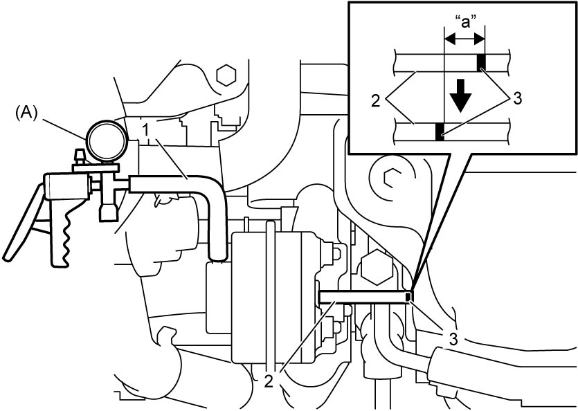

1D
| Waste Gate Valve On-Vehicle Inspection |
1)Remove engine cover. 
2)Disconnect waste gate control hose No.1 (1) from WGV-VSV.
3)Connect special tool (A) to waste gate control hose No.1.
4)Draw a mark (3) on waste gate valve actuator rod (2).
5)Apply negative pressure to waste gate valve actuator until the mark moves 5.0 mm (0.19 in.) and check the pressure at that point.
If check result is not as specified, replace turbocharger.

If check result is not as specified, replace turbocharger.
Negative pressure specification
–17.7 to –17.1 kPa (–0.18 to –0.17 kgf/cm2, –2.56 to –2.48 psi, –0.177 to –0.171 bar)
Actuator rod travel
“a”: 5.0 mm (0.19 in.)

 "Expand image")